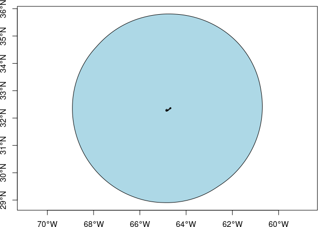
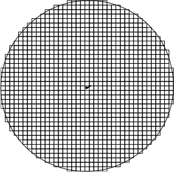
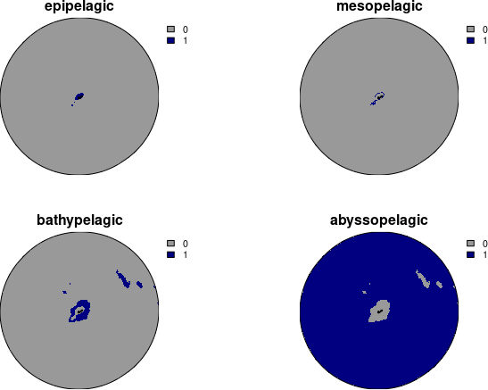

oceandatr provides simple functions for acquiring, processing and gridding ocean data.
Fish images in logo modified from original by Tracey Saxby, Integration and Application Network
Installation
You can install oceandatr from GitHub with:
if (!require(remotes)) install.packages("remotes")
#might need to increase timeout as it is a large package
options(timeout = 9999)
remotes::install_github("emlab-ucsb/oceandatr")Getting gridded ocean data
Obtain an EEZ for an area of interest
First we need a boundary for the area we are interested in. We can use the get_boundary() function, imported from spatialgridr, to get a boundary for land or ocean. In this example we will get Bermuda’s Exclusive Economic Zone (EEZ)
bermuda_eez <- get_boundary(name = "Bermuda")
#plot to check we have Bermuda's EEZ
plot(bermuda_eez[1], col = "lightblue", main=NULL, axes=TRUE)
Get a grid
We are going to get gridded data. To create a grid for Bermuda, we use get_grid(). We need to provide a suitable projection for the area we are interested in, https://projectionwizard.org is useful for this purpose. Standard projections used for countries can also be found at https://epsg.io/ by searching with country name. For spatial planning, equal area projections are normally best.
The bounding box coordinates for the area of interest can be found using sf::st_bbox(bermuda_eez) and these can then be used to generate the coordinate reference system (CRS) on projection wizard
The coordinates above should be entered as the ‘Geographic extent’ and the map should then have a box drawn around the bounding box of the area of interest. The projection can then be copied and pasted from the pop-up box when clicking on ‘WKT’ or ‘PROJ’. For brevity, we are using the PROJ string, but WKT is now generally preferred. The projection needs to be placed in quotation marks as follows:
projection_bermuda <- '+proj=laea +lon_0=-64.8108333 +lat_0=32.3571917 +datum=WGS84 +units=m +no_defs'We can now create a grid for Bermuda’s EEZ using get_grid(). Along with the projection we found above, we will need to set a resolution: how wide and high will each grid cell be, in this case in metres. The units will depend on your crs and can be found using e.g. sf::st_crs(projection_bermuda, parameters = TRUE)$units_gdal
bermuda_grid <- get_grid(boundary = bermuda_eez, resolution = 5000, crs = projection_bermuda)
#project the eez into same projection as grid for plotting
bermuda_eez_projected <- bermuda_eez %>%
sf::st_transform(crs = projection_bermuda) %>%
sf::st_geometry()
#plot the grid
terra::plot(bermuda_grid, col = "gold3", axes = FALSE, legend = FALSE)
plot(bermuda_eez_projected, add=TRUE)
The raster covers Bermuda’s EEZ. The grid cells would be too small to see if we plotted them, but here is a coarser grid (lower resolution) visualized so we can see what the grid cells look like.
bermuda_grid_coarse <- get_grid(boundary = bermuda_eez, resolution = 20000, crs = projection_bermuda)
plot(bermuda_eez_projected, axes = FALSE)
terra::plot(terra::as.polygons(bermuda_grid_coarse, dissolve = FALSE), add=TRUE)
Get bathymetry
Now we have a grid, we can get some data. A key piece of data is bathymetry. If the user has bathymetry data for their area of interest already, they can pass the file path to this function and it will grid the data using the supplied spatial grid. If no file path is provided, the function will extract bathymetry data for the area from the GEBCO 2025 global terrain model.
bathymetry <- get_bathymetry(spatial_grid = bermuda_grid, classify_bathymetry = FALSE)
terra::plot(bathymetry, col = hcl.colors(n=255, "Blues"), axes = FALSE)
plot(bermuda_eez_projected, add=TRUE)
Depth classification
The ocean can be classified into 5 depth zones:
- Continental Shelf: 0 - 200 m depth
- Upper Bathyal: 200 - 800 m depth
- Lower Bathyal: 800 - 3500 m depth
- Abyssal: 3500 - 6500 m depth
- Hadal: 6500+ m depth
We can get the depth zones for Bermuda simply by setting the classify_bathymetry argument in get_bathymetry to TRUE.
depth_zones <- get_bathymetry(spatial_grid = bermuda_grid, classify_bathymetry = TRUE)
#> Bathymetry data already downloaded, using cached version
#value of 1 indicates that depth zone is present
terra::plot(depth_zones, col = c("grey60", "navyblue"), axes = FALSE, fun = function(){terra::lines(terra::vect(bermuda_eez_projected))})
Get geomorphological data
The seafloor has its own valleys, plains and other geomorphological features just as on land. These data come from Harris et al. 2014, Geomorphology of the Oceans and are available for download from https://www.bluehabitats.org, but all but depth classifications (which can be created using get_bathymetry()) and seamounts (which can be retrieved from a more recent dataset using get_seamounts()) are included in this package.
geomorphology <- get_geomorphology(spatial_grid = bermuda_grid) %>%
remove_empty_layers() #can remove any empty layers so we don't have so many layers to plot
#brown colour indicates that geomorphological feature is present
terra::plot(geomorphology, col = data.frame(c(0,1), c("grey60", "sienna")), axes = FALSE, legend = FALSE, fun = function(){terra::lines(terra::vect(bermuda_eez_projected))})
Get knolls data
Knolls are another geomorphological feature, which are ‘small’ seamounts, classified as seamounts between 200 and 1000m higher than the surrounding seafloor Morato et al. 2008. Data are the knoll base area data from Yesson et al. 2011.
knolls <- get_knolls(spatial_grid = bermuda_grid)
#value of 1 indicates that knolls are present
terra::plot(knolls, col = c("grey60", "grey20"), axes = FALSE)
plot(bermuda_eez_projected, add=TRUE)
Get seamount areas
Seamounts, classified as peaks at least 1000m higher than the surrounding seafloor Morato et al. 2008. These data are from Yesson et al. 2021. Each peak is buffered to the distance specified in the function call. The units of the buffer are in the same units as the spatial grid, which can be checked using, e.g. sf::st_crs(bermuda_grid, parameters = TRUE)$units_gdal
#spatial grid units are metres, so set buffer to 30000 m = 30 km
seamounts <- get_seamounts(spatial_grid = bermuda_grid, buffer = 30000)
#value of 1 indicates that seamount is present
terra::plot(seamounts, col = c( "grey60", "saddlebrown"), axes = FALSE)
plot(bermuda_eez_projected, add=TRUE)
Habitat suitability models
Retrieve habitat suitability data for 3 deep water coral groups:
- Antipatharia: Habitats associated with increased biodiversity in both invertebrate and vertebrate species; global distributions were modeled by Yesson et al. (2017)
- Cold water coral: Important habitats and nursery areas for many species; global distributions were modeled by Davies and Guinotte (2011)
- Octocoral: Important habitats for invertebrates, groundfish, rockfish and other species; global distributions were modeled by Yesson et al. (2012)
coral_habitat <- get_coral_habitat(spatial_grid = bermuda_grid)
#show the seamounts areas on the plot: coral habitat is often on seamounts which are shallower than surrounding ocean floor
#value of 1 indicates that coral is present
terra::plot(coral_habitat, col = c("grey60", "coral"), axes = FALSE, fun = function()terra::lines(terra::as.polygons(seamounts, dissolve = TRUE), col = "orangered4"))
Environmental Zones
Bioregions are often included in spatial planning, but available bioregional classifications are either too coarse or too detailed to be useful for planning at the EEZ level. Borrowing methods from Magris et al. 2020, we use spatial clustering of biophysical environmental data from Bio-Oracle, to create ‘environmental zones’. Biophysical conditions within a environmental zone are more similar than areas outside that zone, though the differences may be small. Diagnostic boxplots and a PCA will be shown if show_plots = TRUE. All the biophysical data are ocean surface data for the period 2010 - 2020:
- Chlorophyll concentration (mean, mg/ m3)
- Dissolved oxygen concentration (mean)
- Nitrate concentration (mean, mmol/ m3)
- pH (mean)
- Phosphate concentration (mean, mmol/ m3)
- total Phytoplankton (primary productivity; mean, mmol/ m3)
- Salinity (mean)
- Sea surface temperature (max, degree C)
- Sea surface temperature (mean, degree C)
- Sea surface temperature (min, degree C)
- Silicate concentration (mean, mmol/ m3)
#set number of clusters to 3 to reduce runtime and memory usage
enviro_zones <- get_enviro_zones(spatial_grid = bermuda_grid, show_plots = TRUE, num_clusters = 3)
#value of 1 indicates that environmental zone is present
terra::plot(enviro_zones, col = c("grey60", "forestgreen"), axes = FALSE, fun = function(){terra::lines(terra::vect(bermuda_eez_projected))})